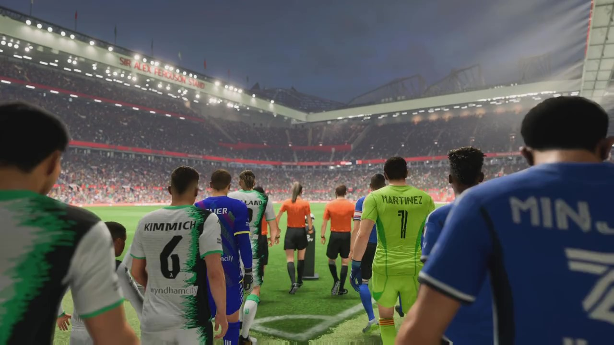

FIFA Super League: The Best Teams and Players
The FIFA Super League is a prestigious competition that features the top football clubs from around the world. With about 12 teams, this league brings together the best players in the sport, creating intense and thrilling matches for fans worldwide.
Each team in the FIFA Super League boasts some of the most talented players in the world, from skilled strikers to solid defenders and brilliant midfielders. The competition is fierce as these teams battle it out on the pitch to claim the title of champions.
Some of the renowned clubs participating in the FIFA Super League include Port Vale, Livingston, Ascoli and more. These teams have a rich history of success and are known for their exceptional gameplay and star-studded rosters.
Whether it's Lionel Messi dazzling with his footwork, Cristiano Ronaldo scoring incredible goals, or Neymar Jr. mesmerizing with his skills, the FIFA Super League showcases the best talents in the world of football.